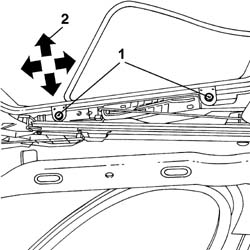

7030B17 Sun roof glass panel - Alignment
- Path
- Procedures > 70 FITTINGS > 7030 SUN ROOF AND HOOD > 7030B SLIDING ROOF > 7030B17 Sun roof glass panel - Alignment
- Kind
- repair procedure (removal / refitting; the operation number is the code)
- Applies to
- all engines; all production periods
- Interactive page
- https://sloeber94.github.io/elrnDB-lThss/en/#/113352
Applies to: all engines; all production periods
Applies to: all engines; all production periods
- Open the sunroof so that the bolts fixing it to the frame are accessible.
1. Loosen the fixing bolts.
- Carry out the same operation for the remaining bolts.
- Continue with the alignment of the sunroof glass, making use of the slotted openings in the bolts.
2. The arrows indicate the possible movements for the adjustment.

Applies to: all engines; all production periods
- When the adjustment is completed, tighten the fixing bolts.